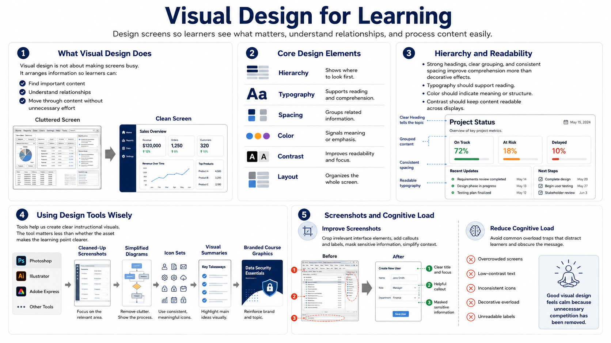

Visual Design for Learning
Connecting to LMS... Progress: in progress

Narration
Visual design for learning is not the same as making screens look busy. It is the practice of arranging information so learners can see what matters, understand relationships, and move through the content without unnecessary effort. Visual hierarchy, typography, spacing, color, contrast, and layout all shape how easily learners process a screen.
Hierarchy tells learners where to look first. A strong heading, clear grouping, and consistent spacing can do more for comprehension than decorative effects. Typography should support reading, not call attention to itself. Color should indicate meaning, emphasis, or structure. Contrast should make content readable across displays and viewing conditions.
Tools such as Photoshop, Illustrator, Adobe Express, or similar applications can support instructional visuals at a high level. They can help create cleaned-up screenshots, simplified diagrams, icon sets, visual summaries, and branded course graphics. The important question is not which tool created the asset. The important question is whether the asset makes the learning point clearer.
Screenshots deserve special care. A raw screenshot often includes irrelevant menus, extra data, and cluttered interface details. Cropping, callouts, labels, masking sensitive information, and simplifying surrounding context can help the learner focus. If the point is conceptual, a simplified diagram may teach better than a highly detailed screenshot.
Reducing cognitive load is a central design goal. Avoid overcrowded screens, low-contrast text, inconsistent icons, decorative overload, and unreadable labels. If learners must fight the design to find the message, the media is working against the course. Good visual design feels calm because unnecessary competition has been removed.